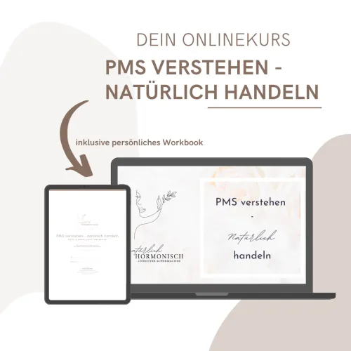

Online Hormonkurs: PMS verstehen - natürlich handeln
Produktprofil · Marktplatz-Daten 2026-10-14 · Verkaufsseiten-Recherche 2026-10-14 · Kategorien: Health & Fitness
- Online Hormonkurs: PMS verstehen - natürlich handeln ist ein/e Mitgliederbereich & Videokurs in Health & Fitness, vertrieben über den Digistore24-Marktplatz von Anbieter natuerlich-hormonisch, gelistet seit 2026-09-25.
- Listenpreis $279.23 (single payment) — Checkout, Auslieferung und Rückerstattungen laufen über Digistore24 selbst, nicht über den Anbieter.
- Käuferschutz: keine standardisierte Garantie-Formulierung gefunden — Rückerstattungsbedingungen vor der Zahlung auf der offiziellen Seite prüfen.
Interesse an Online Hormonkurs: PMS verstehen - natürlich handeln? Aktueller Preis, Boni und Garantiebedingungen finden Sie auf der offiziellen Seite des Anbieters:
Offizielle Verkaufsseite ansehen
Affiliate-Link (Werbung) — wir verdienen ggf. eine Provision, ohne Mehrkosten für Sie.

Marktplatz-Daten
| Produkttyp | Mitgliederbereich & Videokurs |
|---|---|
| Preis | $279.23 (Single payment) |
| Garantie/Rückgabe | Laut Verkaufsseite des Anbieters — vor dem Kauf auf der offiziellen Seite prüfen |
| Anbieter | natuerlich-hormonisch (gelistet seit 2026-09-25) |
Marktplatz-Beschreibung des Anbieters
Online Hormonkurs Zyklusbeschwerden vor deiner Periode: PMS verstehen – natürlich handeln Der esoterikfreie Online-Selbstlernkurs mit Workbook: naturheilkundlich fundiert, verständlich erklärt und abgestimmt auf den persönlichen PMS-Typ. Bewerbung nur ohne Heilversprechen! Bitte beachte die Richtlinien auf der Support-Seite! Kurzbeschreibung Ein hochwertiger Online-Kurs für eine große Zielgruppe mit echtem Bedarf: Frauen mit PMS und Zyklusbeschwerden. Naturheilkundlich fundiert und bewusst esoterikfrei, entwickelt von einer ärztlich geprüften Gesundheits- und Ernährungsberaterin. 297 € Kurspreis, 50 % Provision. Beschreibung für Affiliates Du erreichst Frauen, die sich für ihre Gesundheit, ihren Zyklus oder natürliche Wege zu mehr Wohlbefinden interessieren und dabei Wert auf fundiertes Wissen legen? Dann ist dieser Kurs ein Produkt, das deine Community wirklich weiterbringt und das du guten Gewissens empfehlen kannst. Was ist PMS? PMS steht für prämenstruelles Syndrom: körperliche und psychische Beschwerden, die in den Tagen vor der Periode auftreten, jeden Monat wiederkehren und mit Beginn der Blutung abklingen. Typisch sind zum Beispiel Stimmungstief, Reizbarkeit, Heißhunger, Müdigkeit, Brustspannen, Wassereinlagerungen und Kopfschmerzen. Viele Frauen verwechseln PMS mit Regelschmerzen oder wissen gar nicht, dass ihre Beschwerden einen Namen haben. Darum geht es im Kurs Genau hier setzt „PMS verstehen – natürlich handeln“ an. Der Kurs erklärt verständlich, was im Körper vor der Periode passiert, hilft dabei, die persönlichen Auslöser zu erkennen, und zeigt, welche natürlichen Maßnahmen zum eigenen PMS-Typ passen. Im begleitenden Workbook bestimmt jede Teilnehmerin ihren persönlichen PMS-Typ und erarbeitet ihre individuellen Ergebnisse. Naturheilkunde ja, Esoterik nein Viele Angebote rund um Zyklus und Hormone arbeiten mit esoterischen Ansätzen wie Mondphasen-Ritualen oder Energiearbeit. Dieser Kurs geht bewusst einen anderen Weg: Alle Maßnahmen beruhen auf naturheilkundlichem Fachwissen und nachvollziehbaren Zusammenhängen aus Ernährung, Heilpflanzen, Mikronährstoffen, ätherischen Ölen und Lebensstil. Für eine ganzheitliche Sicht auf den Menschen lädt der Kurs außerdem dazu ein, über das biblisch-christliche Menschenbild nachzudenken, als Anregung und nicht als Voraussetzung. So ist der Kurs aufgebaut Einführung: Willkommen und Überblick Modul 1 – Verstehen: Zyklus und Hormone Modul 2 – Erkennen: die 7 häufigsten Auslöser und die Bestimmung des persönlichen PMS-Typs Modul 3 – Handeln: natürliche Maßnahmen je PMS-Typ aus Ernährung, Heilpflanzen, Mikronährstoffen, ätherischen Ölen und Lebensstil Bonusmodul: 5 praktische Tipps für den Alltag Modul 4 – Integrieren: die nachhaltige Umsetzung im Alltag Abschluss Insgesamt 17 Videolektionen plus ein Workbook als PDF zum Ausfüllen. Der Zugang kommt sofort nach dem Kauf per E-Mail, alle Inhalte sind danach jederzeit online abrufbar. Warum sich die Bewerbung für dich lohnt Der Kurs ist esoterikfrei. Damit hebt er sich von vielen Zyklus-Angeboten ab und spricht Frauen an, die fundiertes Wissen statt Esoterik suchen. Der Kurs ist fachlich fundiert. Er wurde von Christine Schermacher entwickelt, ärztlich geprüfte Gesundheits- und Ernährungsberaterin mit Zusatzausbildungen in Hormonberatung, Phytotherapie, Aromatherapie und Naturheilkunde. Der Kurs ist individuell statt pauschal. Durch die PMS-Typenbestimmung im Workbook bekommen Teilnehmerinnen keine allgemeinen Tipps, sondern Maßnahmen, die zu ihnen passen. Das macht den Kurs leicht erklärbar und unterscheidet ihn deutlich von anderen Angeboten. Das Thema betrifft sehr viele Frauen. PMS gehört zu den häufigsten Zyklusbeschwerden, das Thema kommt jeden Monat wieder und ist sehr persönlich. Das sind gute Voraussetzungen für eine hohe Kaufbereitschaft. Du bekommst eine attraktive Provision. Du erhältst 50 % auf jeden Verkauf, den du vermittelst. Bei einem Kurspreis von 297 € ist das pro Verkauf ein Vielfaches dessen, was du mit einem günstigen E-Book verdienst. Die Verkaufsseite ist fertig. Sie holt Frauen bei ihren Beschwerden ab, erklärt den Kursaufbau Modul für Modul und führt direkt zum Digistore24-Checkout. Du musst nur deinen Link teilen. Das Produkt passt zu vielen Nischen: Frauengesundheit, Hormon- und Zyklusthemen, Naturheilkunde, Mama-Blogs, Ernährungsberatung, Fitness und Lifestyle. Für wen der Kurs gedacht ist Für Frauen, die vor ihrer Periode immer wieder mit körperlichen oder emotionalen Beschwerden zu tun haben, die verstehen möchten, was dahintersteckt, und die natürliche, alltagstaugliche Maßnahmen suchen, fundiert erklärt und ohne Esoterik. Produktdetails Online-Selbstlernkurs · 17 Videolektionen · Workbook als PDF · sofortiger Zugang per E-Mail · jederzeit abrufbar · 297 € Einmalzahlung · 50 % Provision Wichtig Ich prüfe jede Partneranfrage persönlich. Der Kurs ersetzt keine ärztliche Beratung, Diagnose oder Behandlung. Bitte bewirb ihn ohne Heilversprechen.
Von der Verkaufsseite des Anbieters
Seitentitel: VK-Seite PMS Onlinekurs digistore | natürlich Hormonisch
Abschnitts-Überschriften
- 100% ESOTERIKFREI
- 100% ESOTERIKFREI
- 100% ESOTERIKFREI
Einstiegstext
*Es handelt sich um einen Affiliate-Link. Wenn du darüber etwas kaufst, erhalte ich eine kleine Provision, die mir hilft, die Hosting-Kosten meines Blogs zu decken - für dich bleibt der Preis selbstverständlich gleich. Hinweis: Einige Beitragsbilder auf dieser Website wurden mit KI erstellt und dienen nur zur Illustration
Recherche-Methode: rohes HTML · 110 Wörter · Qualität: thin · recherchiert am 2026-10-14. Vollständige Recherche-Datei (MD) ↗
Wie Produkte dieser Art geliefert werden
Allgemeiner Hinweis zu diesem Produkttyp (keine anbieterspezifische Anleitung): Videokurse laufen über einen Mitgliederbereich: nach dem Checkout erhalten Sie Zugangsdaten per E-Mail und können die Lektionen in Ihrem eigenen Tempo streamen. Für die genaue Anwendung von Online Hormonkurs: PMS verstehen - natürlich handeln sind die offizielle Verkaufsseite und die enthaltenen Materialien maßgeblich.
Weitere Bilder (von der Verkaufsseite des Anbieters)
Bilder stammen von der offiziellen Verkaufsseite des Anbieters und zeigen das Produkt, wie es beworben wird.
Gut zu wissen
- Hoher Preis: $279.23 ist eine erhebliche Ausgabe — prüfen Sie, ob es einen Zahlungsplan gibt, und vergleichen Sie zuerst die günstigeren Alternativen der Kategorie.
- Keine Garantie-Formulierung in unserer Recherche gefunden — bestätigen Sie das Rückgabefenster auf der offiziellen Seite, bevor Sie kaufen.
- Hinweise der Verkaufsseite (wörtlich, nicht von uns geprüft): „*Es handelt sich um einen Affiliate-Link. Wenn du darüber etwas kaufst, erhalte ich eine kleine Provision, die mir hilft, die Hosting-Kosten meines Blogs zu decken – für dich bleibt der Preis selbstverständlich gleich. Hinweis: Einige Beitragsbilder auf dieser Website wurden mit KI erstellt und dienen nur zur Illustration"
Was ist Online Hormonkurs: PMS verstehen - natürlich handeln?
Online Hormonkurs: PMS verstehen - natürlich handeln ist ein/e mitgliederbereich & videokurs in der Kategorie Gesundheit & Fitness des Digistore24-Marktplatzes, veröffentlicht von Anbieter natuerlich-hormonisch und im Verkauf seit 2026-09-25. Der Anbieter beschreibt es so: "Online Hormonkurs Zyklusbeschwerden vor deiner Periode: PMS verstehen – natürlich handeln Der esoterikfreie Online-Selbstlernkurs mit Workbook: naturheilkundlich fundiert, verständlich erklärt und abgestimmt auf den persönlichen PMS-Typ. Bewerbung nur ohne Hei" (Marktplatz-Beschreibung des Anbieters, leicht gekürzt).
Online Hormonkurs: PMS verstehen - natürlich handeln Preis: was Sie zahlen
Der Marktplatz listet Online Hormonkurs: PMS verstehen - natürlich handeln zum $279.23 Preis (single payment). Digistore24 fügt im Checkout die gesetzliche Steuer Ihres Landes hinzu — dort sehen Sie den Endbetrag vor der Zahlung. Eine separate Plattformgebühr gibt es nicht; Anbieter können eigene Upsells nach dem Checkout anbieten.
Online Hormonkurs: PMS verstehen - natürlich handeln Rückerstattung und Geld-zurück-Garantie
Wir haben keine standardisierte Garantie-Formulierung auf der Verkaufsseite gefunden. Rückerstattungen für Digistore24-Käufe laufen über die Plattform: Antrag über den Support-Link in Ihrer Bestell-E-Mail, innerhalb des Garantiezeitfensters, das im Checkout angezeigt wird. Praktischer Rat: Entscheiden Sie innerhalb des Fensters — wenn das Produkt unter den Erwartungen bleibt, erstatten lassen statt irren lassen.
Mechanik im Detail: So funktionieren Digistore24-Rückerstattungen.
Für wen ist Online Hormonkurs: PMS verstehen - natürlich handeln geeignet?
Basierend auf der Gesundheit & Fitness-Einordnung und der single payment-Abrechnung richtet sich Online Hormonkurs: PMS verstehen - natürlich handeln an Käufer, die gesundheit & fitness-Lösungen suchen und ein Budget für einen Premium-Kauf eingeplant haben. Der ehrliche Test ist nicht die Kategorie, sondern Ihre eigene Situation: Werden Sie es realistisch innerhalb des Garantiefensters nutzen? Wenn ja, ist der Preis eine Investition; wenn nein, ist er Ballast — unabhängig von der Qualität.
Ist Online Hormonkurs: PMS verstehen - natürlich handeln seriös? Was Sie vor dem Kauf prüfen
Wir bewerten keine Seriosität — das kann niemand, ohne das Produkt zu nutzen. Prüfbare Punkte, alle auf dieser Seite: die Marktplatz-Historie des Anbieters (im Verkauf seit 2026-09-25), die wörtlichen Verkaufsseiten-Auszüge unten (gekennzeichnet als Anbieteraussagen — deren Werbung, nicht unsere Empfehlung), die Garantiebedingungen im Checkout und die Auslieferungsart. Vorsichtsignale bei jedem Angebot: Countdown-Dringlichkeit gepaart mit vagen Rückerstattungsbedingungen, Testimonials ohne Datum und Anbieterseiten, die den Preis bis zum Checkout verstecken.
Wie kommen Sie nach dem Kauf an Online Hormonkurs: PMS verstehen - natürlich handeln?
Der Checkout läuft über Digistore24. Nach der Zahlung: Videokurse laufen über einen Mitgliederbereich: nach dem Checkout erhalten Sie Zugangsdaten per E-Mail und können die Lektionen in Ihrem eigenen Tempo streamen. Bewahren Sie die Bestell-E-Mail auf — sie ist Ihr Schlüssel zum/d zur mitgliederbereich & videokurs, zu Rückerstattungsanträgen und zum Digistore24-Käufersupport.
Online Hormonkurs: PMS verstehen - natürlich handeln Erfahrungen: so recherchieren Sie richtig
Die meisten „Erfahrungsberichte" zu Marktplatz-Produkten sind Affiliate-Inhalte — einschließlich Seiten wie dieser, die an Käufen mitverdienen. Behandeln Sie jeden Bericht (auch unseren) als Ausgangspunkt und prüfen Sie gegen Primärquellen: die Verkaufsseite des Anbieters, die Digistore24-Rückerstattungsrichtlinie und — für gesundheit & fitness — unabhängige Communities außerhalb des Affiliate-Ökosystems. Auf dieser Seite sind die Verkaufsseiten-Auszüge unten wörtlich zitiert, damit Sie die Aussagen des Anbieters bewerten können, ohne wegzuklicken.
Wie Sie Online Hormonkurs: PMS verstehen - natürlich handeln sicher kaufen
- Öffnen Sie die offizielle Verkaufsseite und lesen Sie das vollständige Angebot.
- Bestätigen Sie Endpreis und Garantiezeitfenster auf der Digistore24-Kassenseite — sie ist bindend, kein Vergleichsportal.
- Zahlen Sie innerhalb des Digistore24-Checkouts (niemals per Überweisung oder Off-Platform-Links).
- Speichern Sie die Bestellbestätigung; notieren Sie die Rückerstattungsfrist im Kalender.
- Prüfen Sie zügig. Der Digistore24-Käufersupport hilft, wenn der Anbieter nicht reagiert.
Vollständiges Recherche-Archiv für dieses Produkt (Markdown: kompletter Marktplatz-Datensatz + wörtliche Verkaufsseiten-Auszüge): Online Hormonkurs: PMS verstehen - natürlich handeln — Datenarchiv (.md).
- Listenpreis & Abrechnung — Quelle: offizielle Digistore24-Marktplatz-API, Stand 2026-10-14. Maßgeblich für den aktuellen Preis ist immer die Kassenseite.
- Verkaufsseiten-Zitate — Quelle: https://www.natuerlich-hormonisch.de/pms-onlinekurs-digistore, abgerufen 2026-10-14 (Methode: rohes HTML). Verify: offizielle Seite öffnen.
- Garantie / Rückgabe — vom Anbieter festgelegt; vor dem Kauf auf der Verkaufsseite bestätigen.
- Nicht von uns geprüft: Produktqualität, Ergebnisse, Testimonials — kein Praxistest für dieses Listing durchgeführt.
Häufige Fragen zu Online Hormonkurs: PMS verstehen - natürlich handeln
Antworten aus dem Marktplatz-Snapshot (2026-10-14) und der Verkaufsseiten-Recherche (2026-10-14); Anbieteraussagen sind inline gekennzeichnet.
Was ist Online Hormonkurs: PMS verstehen - natürlich handeln?
Online Hormonkurs: PMS verstehen - natürlich handeln ist ein Angebot des Typs „Mitgliederbereich & Videokurs" im Digistore24-Marktplatz, Anbieter: natuerlich-hormonisch, gelistet seit 2026-09-25. Eingepflegt unter Gesundheit & Fitness. Digistore24 wickelt Checkout, Lieferung und Rückgaben ab.
Wie viel kostet Online Hormonkurs: PMS verstehen - natürlich handeln?
Der Digistore24-Marktplatz listet es für $279.23 (single payment). Preise legt der Anbieter fest und können sich ändern — der Marktplatz-Eintrag oben zeigt den Schnappschuss; die offizielle Verkaufsseite zeigt den aktuellen Preis.
Gibt es eine Geld-zurück-Garantie für Online Hormonkurs: PMS verstehen - natürlich handeln?
Unsere Verkaufsseiten-Recherche hat keine explizite Garantie-Formulierung gefunden. Viele Digistore24-Produkte bieten 60 Tage Geld-zurück, aber das legt jeder Anbieter selbst fest — bestätigen Sie es auf der offiziellen Verkaufsseite, bevor Sie kaufen.
Ist Online Hormonkurs: PMS verstehen - natürlich handeln seriös?
Wir bewerten keine Seriosität — wir veröffentlichen überprüfbare Zahlen: Anbieter natuerlich-hormonisch (gelistet seit 2026-09-25), mit der vollständigen Verkaufsseiten-Recherche archiviert auf dieser Seite (Anbieteraussagen als solche gekennzeichnet). Lesen Sie unsere 6-Punkte-Bewertungsmethode und entscheiden Sie anhand der Zahlen — oder diskutieren Sie Online Hormonkurs: PMS verstehen - natürlich handeln auf GitHub.
Wo kann ich Online Hormonkurs: PMS verstehen - natürlich handeln sicher kaufen?
Nur über die offizielle Verkaufsseite, die auf dieser Seite verlinkt ist (Checkout und Rückgaben laufen über Digistore24). Prüfen Sie dort Preis und Garantie vor der Bestellung. Der Link ist ein Affiliate-Link — der Kauf unterstützt diese Website ohne Mehrkosten für Sie.
Wie erhalte ich Online Hormonkurs: PMS verstehen - natürlich handeln nach der Zahlung?
Der Checkout läuft über Digistore24: Nach der Zahlung erhalten Sie Ihren Zugang oder Download per E-Mail und in Ihrem Digistore24-Kundenkonto. Lieferdetails für diesen Produkttyp: Videokurse laufen über einen Mitgliederbereich: nach dem Checkout erhalten Sie Zugangsdaten per E-Mail und können die Lektionen in Ihrem eigenen Tempo streamen. Bei Problemen kann der Digistore24-Käufersupport Ihre Bestellung wiederherstellen.
Alle 50 Käuferfragen zu Gesundheit & Fitness — das komplette Kategorie-FAQ.
Online Hormonkurs: PMS verstehen - natürlich handeln auf Reddit diskutieren
In Community-Threads vergleichen echte Käufer Erfahrungen. Wir verlinken Communities, keine einzelnen Posts — Threads verschwinden, Subreddits bleiben:
- r/FITNESS — deutschsprachige Community mit Diskussionen zu health & fitness.
- Reddit-Suche nach „Online Hormonkurs: PMS verstehen - natürlich handeln" — Live-Ergebnisse, von uns nicht beeinflusst.
- Top-„Erfahrungs"-Treffer dieses Jahr — selbst nach Aktualität filtern.
Passendes auf Amazon.de
Physische Produkte und Zubehör, die häufig zusammen mit Online Hormonkurs: PMS verstehen - natürlich handeln gekauft werden:
- Nahrungsergänzung auf Amazon.de — Top-Ergebnisse, Amazon-Ranking.
- Bestseller: Nahrungsergänzung — live Liste von Amazon, von uns nicht kuratiert.
Werbung: Als Amazon-Partner verdient DigistorePicks DE an qualifizierten Käufen (Partner-tag adminstorede-21). Amazon setzt eigene Preise und Provisionen (niedrige einstellige Prozente — weit unter den 30–75% der Digistore24-Anbieter). Amazon ist ein Convenience-Angebot für Sachprodukte, kein Ersatz für das digitale Produkt oben.
Ähnliche Angebote in Gesundheit & Fitness

Eine vollständig strukturierte, medizinisch fundierte Online-Ausbildung zur Vorbereitung auf die Heilpraktikerprüfung – mit klarem Curriculum, systematischem Au

Online Ausbildung zum Holistic Skin & Health Expert, staatlich Zugelassen mit Abschlusszertifikat ( 6 Monate) Werde zertifizierter Holistic Skin & Healt

1:1 Online Training per Video Mentale Klarheit auf Knopfdruck – mitten im echten Leben. Stell dir vor, du könntest deinen Fokus, deine Gelassenheit und deine Wa

bis zu 10% Provision | 600.000€ Umsatzpotenzial für 2026 Marktplatz-Beschreibung Sichern Sie sich Ihren Anteil am Erfolg: Wir suchen exklusive Partner für ein 6
Weitere Angebote von natuerlich-hormonisch

50 antientzündliche & hormonfreundliche Rezepte, die deinen Zyklus unterstützen Das digitale Rezeptbuch mit Gerichten, die deinen Körper wieder mit dem vers
Ähnliche Preislage in Gesundheit & Fitness

Körperfeldcoaching Clips verbessern deinen Energiefluß und stärken deine Selbst-Regulationsfähigkeit! Empfehlen Sie unser einzigartiges Produkt für Gesundheit,

Mit dem Online Kurs Tinnitus meistern Betroffene ihren Tinnitus. Auch Begleiterscheinungen wie Schlafstörungen, Ängste, depressive Verstimmungen, etc. verbesser

50% Provision, hochoptimierter Funnel - i nkl. Remarketing auf unsere Kosten! Die modernste und wissenschaftlich fundierte Tinnitus-Selbsttherapie für zuhause a

Die vollständige Sammlung "ALLES" enthält ausnahmslos alle Neurostreams™ auf einem erstklassigen USB-Stick. Diese legendäre Sammlung ist sehr umfangre
Ähnliche Suchanfragen
Wo Sie es sich ansehen können
Wo Sie es sich ansehen können
Aktuelle Preise, Garantie und Boni finden Sie auf der offiziellen Verkaufsseite:
Offizielle Verkaufsseite ansehen
Das ist ein Affiliate-Link (Werbung) — kaufen Sie darüber, verdienen wir ggf. eine Provision, ohne Mehrkosten für Sie.
Quellen & weiterführende Informationen
- Offizielle Verkaufsseite (aktueller Preis, Garantie, Boni): www.natuerlich-hormonisch.de/pms-onlinekurs-digistore (Affiliate-Link)
- Öffentliche Digistore24-Produktseite: checkout-ds24.com/product/734498
- Vollständige Recherche-Datei (Markdown, versioniert): content/products/59720-online-hormonkurs-pms-verstehen-nat-rlich-handeln.md
- Affiliate-Supportseite des Anbieters: www.natuerlich-hormonisch.de/affiliateseite-digistore-pms-ku
- Marktplatz-Kategorie: Gesundheit & Fitness
Wie wir Produkte wie Online Hormonkurs: PMS verstehen - natürlich handeln bewerten
Sechs Prüfungen, ausschließlich mit offiziellen Marktplatz-Zahlen. Die vollständige Bewertungsmethode lesen · unsere Recherche-Standards & Kennzeichnung.
Fragen oder eigene Erfahrungen mit Online Hormonkurs: PMS verstehen - natürlich handeln?
Praxis-Tests veröffentlichen wir erst, nachdem wir ein Produkt selbst gekauft haben — aber Ihre Erfahrung hilft anderen Lesern: Diskussion zu Online Hormonkurs: PMS verstehen - natürlich handeln auf GitHub starten/verfolgen. Falsche Zahl gefunden? Korrektur melden — jede Seite zeigt ihre Datenstände, Korrekturen gelten für die ganze Website.